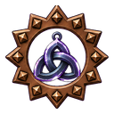

FORGEKIN
Ana sayfa
Rehber
Eşyalar
Tarifler
Meslekler
Bölgeler
English
Türkçe
Eşyalar
Teçhizat
Silahlar
Kalkanlar
Sadaklar
Kitaplar
Miğferler
Göğüslükler
Eldivenler
Pantolonlar
Çizme
Takılar ve Tılsımlar
Yüzükler
Kolyeler
Küpeler
Kemerler
Tılsımlar

Toplama
Cevherler
Balıklar
Otlar
Dinamitler
Yemler
Tohumlar
İşlenmiş Malzemeler
Külçeler
Yumuşatıcılar
Usta Yemekleri
Yükseltme
Kalite Yükseltme Malzemeleri
Yükseltme Taşları
Koruma Taşları
Özler
Tamir Kâğıtları
Zindanlar
Zindan Anahtarları
Zindan Çekirdekleri
Aletler
Toplama Aletleri
Atölye Aletleri
Diğer
Kutular
Pet Parçaları
Parşömenler
Jetonlar
↑